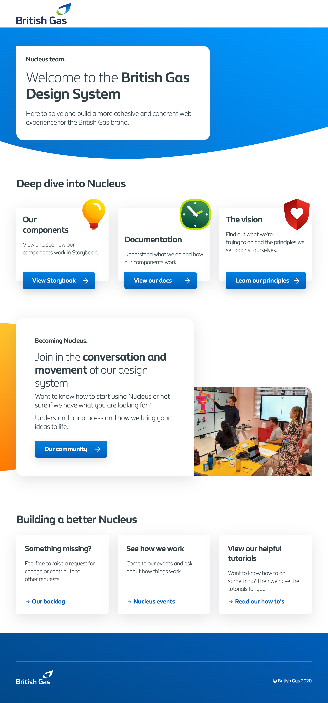

Nucleus - a design system for British Gas
This is my current project. Not much to say yet but so far I've been involved in:
- Improving ways of working and helping establish processes both inside and outside of the design system team
- Taking the lead on presenting recent progress to the company
- Set up a system to automatically audit design system usage across the website
- Supporting product teams in how to use the design system, gathering feedback and refining requirements
- Helping create a new rapid prototyping environment and speeding up delivery by designing in the browser
- Building and designing new webcomponents using polymerjs
- Being an accessibility advocate
- Encouraging community involvement in the design system and contributions from outside of the core design system team
- Exploring ways to expand the design system beyond the web and venture into the app and emails
